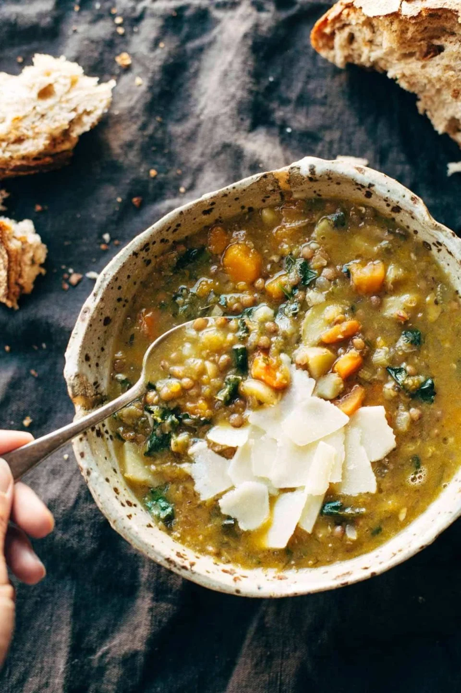

im Lentil Soup

Description!
Detox Crockpot Lentil Soup – a clean and simple soup made with onions, garlic, carrots, olive oil, squash, and LENTILS! Super healthy and easy to make.
- mushrooms
- walnuts
- zucchini
- Place the mushrooms, walnuts, and zucchini in a food processor
- Pulse a few times until the mixture is very finely chopped
- Transfer to a bowl
- Repeat this process with garlic, onion, and carrots